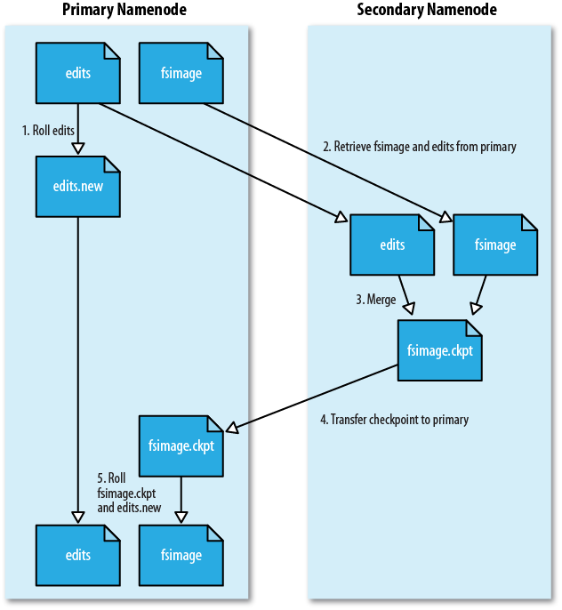

Namenode, Secondary Namenode, Datanode在磁盘上数据是如何存储组织的。
${dfs.name.dir}/
└── current/
├── VERSION
├── edits
├── fsimage
└── fstime
#Tue Mar 10 19:21:36 GMT 2009
namespaceID=134368441 #文件系统的唯一id号
#文件系统第一次格式化时创建
#用于检测新添加的datanode,因为它们不知道这个id号
cTime=0 # namenode存储创建的时间
# 对于新格式化的设备总是0
# 升级时会更新这个时间
storageType=NAME_NODE # 表名该文件夹存储什么样的数据
# 这个文件夹说明存放namenode的数据
layoutVersion=-18 # 文件系统存储数据所使用结构的版本
# 是一个负数
# 升级会变成一个更小的负数，下一个版本-19
编辑日志edit log:
fsimage:
fsimage中的内容:
edit log并没有大小限制，而namenode运行时，并不会有影响， 但当namenode重启时，会花很长的时间replay这个文件里的操作. 解决方案就是使用secondary namenode.
secondary namenode:
hadoop dfsadmin -saveNamespace
fs.checkpoint.period 指定
fs.checkpoint.size 指定

${fs.checkpoint.dir}/
├── current/
│ ├── VERSION
│ ├── edits
│ ├── fsimage
│ └── fstime
└── previous.checkpoint/
├── VERSION
├── edits
├── fsimage
└── fstime
${dfs.data.dir}/
└── current/
├── VERSION
├── blk_<id_1>
├── blk_<id_1>.meta
├── blk_<id_2>
├── blk_<id_2>.meta
├── ...
├── blk_<id_64>
├── blk_<id_64>.meta
├── subdir0/
├── subdir1/
├── ...
└── subdir63/
dfs.datanode.numblocks 设置这个数据
Namenode的启动:
安全模式:
namenode不维护hdfs block的位置信息:
| Property name | Type | Default value | Description |
| dfs.replication.min | int | 1 | The minimum number of replicas that have to be written for a write to be successful. |
| dfs.safemode.threshold.pct | float | 0.999 | The proportion of blocks in the system that must meet the minimum replication level defined by dfs.replication.min before the namenode will exit safe mode. Setting this value to 0 or less forces the namenode not to start in safe mode. Setting this value to more than 1 means the namenode never exits safe mode. |
| dfs.safemode.extension | int | 30,000 | The time, in milliseconds, to extend safe mode after the minimum replication condition defined by dfs.safemode.threshold.pct has been satisfied. For small clusters (tens of nodes), it can be set to 0. |
% hadoop dfsadmin -safemode get
hadoop dfsadmin -safemode wait
# command to read or write a file
% hadoop dfsadmin -safemode enter
% hadoop dfsadmin -safemode leave